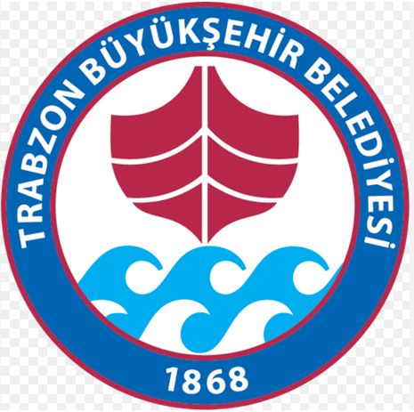

Trabzon Büyükşehir Belediye Spor Kulübü
Deneme sürümü olması sebebi ile veriler biraz gecikebilir. Sistem tam kapasite çalıştığında hızlı olacak ;)
Motorlar ısınana kadar, antrenmanını takip edelim...
Motorlar ısıtılıyor, sistem uyandırılıyor... Lütfen bekleyin.
🚀 Sistem Hazır - Giriş Yap
📲 Uygulamayı Telefona Kur